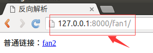
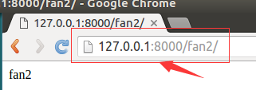
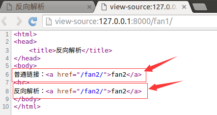

反向解析
先看看原来怎么做
1) 打开booktest/views.py文件，创建视图fan1、fan2。
def fan1(request):
return render(request,'booktest/fan1.html')
def fan2(request):
return HttpResponse('fan2')
2）打开booktest/urls.py文件，配置url。
url(r'^fan1/$', views.fan1),
url(r'^fan2/$', views.fan2),
3）在templates/booktest/目录下创建fan1.html。
<html>
<head>
<title>反向解析</title>
</head>
<body>
普通链接：<a href="/fan2/">fan2</a>
</body>
</html>
4）运行服务器，在浏览器中输入如下网址：
http://127.0.0.1:8000/fan1/
浏览效果如下图：

5）点击链接后转向fan2，效果如下图：

6）打开booktest/urls.py文件，修改"fan2"的正则表达式为"fan_show"。
url(r'^fan_show/$', views.fan2),
7）打开浏览器，后退一下，刷新后再次点击链接，浏览如下图：
问题就来了：随着功能的增加会出现更多的视图，可能之前配置的正则表达式不够准确，于是就要修改正则表达式，但是正则表达式一旦修改了，之前所有对应的超链接都要修改，真是一件麻烦的事情，而且可能还会漏掉一些超链接忘记修改，有办法让链接根据正则表达式动态生成吗？ 答：反向解析。
反向解析应用在两个地方：模板中的超链接，视图中的重定向。
反向解析
要实现反向解析功能，需要如下步骤：
1）在test4/urls.py中为include定义namespace属性。
url(r'^',include('booktest.urls',namespace='booktest')),
2）在booktest/urls.py中为url定义name属性，并修改为fan2。
url(r'^fan2/$', views.fan2,name='fan2'),
3）在模板中使用url标签做超链接，此处为templates/booktest/fan1.html文件。
<html>
<head>
<title>反向解析</title>
</head>
<body>
普通链接：<a href="/fan2/">fan2</a>
<hr>
反向解析：<a href="{%url 'booktest:fan2'%}">fan2</a>
</body>
</html>
4）回到浏览器中，后退，刷新，查看源文件如下图，两个链接地址一样。

5）在booktest/urls.py中，将fan2修改为fan_show。
url(r'^fan_show/$', views.fan2,name='fan2'),
6）回到浏览器中，刷新，查看源文件如下图，两个链接地址不一样。

7）反向解析也可以应用在视图的重定向中。
from django.shortcuts import redirect
from django.core.urlresolvers import reverse
return redirect(reverse('booktest:fan2'))
总结：在定义url时，需要为include定义namespace属性，为url定义name属性，使用时，在模板中使用url标签，在视图中使用reverse函数，根据正则表达式动态生成地址，减轻后期维护成本。
URL的参数
有些url配置项正则表达式中是有参数的，接下来讲解如何传递参数。
情况一：位置参数
1）在booktest/urls.py中，修改fan2如下：
url(r'^fan(\d+)_(\d+)/$', views.fan3,name='fan2'),
2）在booktest/views中，定义视图fan3如下:
def fan3(request, a, b):
return HttpResponse(a+b)
3）修改templates/booktest/fan1.html文件如下：
<html>
<head>
<title>反向解析</title>
</head>
<body>
普通链接：<a href="/fan2_3/">fan2</a>
<hr>
反向解析：<a href="{%url 'booktest:fan2' 2 3%}">fan2</a>
</body>
</html>
4）回到浏览器中，刷新，查看源文件如下图：
使用重定向传递位置参数格式如下：
return redirect(reverse('booktest:fan2', args=(2,3)))
情况二：关键字参数
1）在booktest/urls.py中，修改fan2如下：
url(r'^fan(?P<id>\d+)_(?P<age>\d+)/$', views.fan4,name='fan2'),
2）在booktest/views中，定义视图fan4如下:
def fan4(request, id, age):
return HttpResponse(id+age)
2）修改templates/booktest/fan1.html文件如下：
<html>
<head>
<title>反向解析</title>
</head>
<body>
普通链接：<a href="/fan100_18/">fan2</a>
<hr>
反向解析：<a href="{%url 'booktest:fan2' id=100 age=18%}">fan2</a>
</body>
</html>
3）回到浏览器中，刷新，查看源文件如下图：

使用重定向传递关键字参数格式如下：
return redirect(reverse('booktest:fan2', kwargs={'id':100,'age':18}))